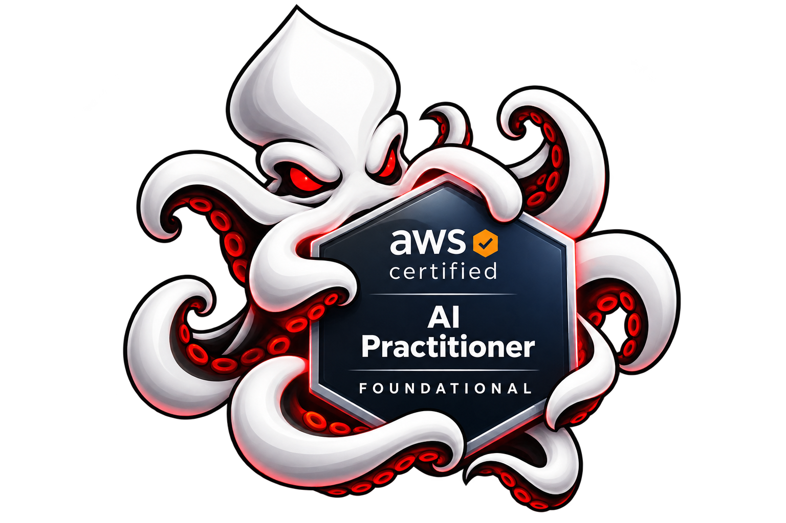

Bienvenidos a KrakeDev
Tu próxima certificación AWS

Certificación oficial · Nivel Foundational
AWS Certified
AI Practitioner
AI Practitioner
AIF-C01
Instructor: Santiago Mosquera
6 semanas para comprender la inteligencia artificial, aplicarla y prepararte para obtener la certificación.